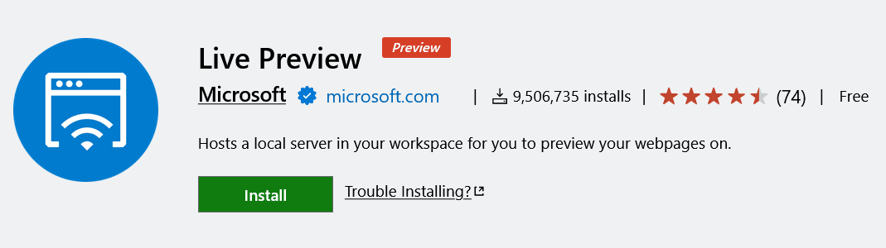

Prettier - Code formatter
Prettier is like a super-neat maid for your code. You write your code, and it might be a bit messy, with uneven spaces or lines that are too long. Prettier automatically cleans it all up and makes it look consistent and good, so it's easier for everyone to read and understand.

Live Server
When you're building a website, you usually have to save your changes in your code and then go to your web browser and click "refresh" to see those changes. Live Server automatically dictate HTML, CSS, or JavaScript files, Live Server instantly updates your browser without you having to do anything.


Live Preview
Live Preview is similar to Live Server, but it's even more direct. Instead of opening your website in a separate browser window, Live Preview creates a mini-browser right inside your VS Code editor. This means you can see your website's changes instantly, as you type and save, without ever leaving your coding environment. It's super handy for quickly checking how your HTML and CSS changes look without constantly switching between apps.
Auto Rename Tag
Auto Rename Tag is like a smart tool that, when you change the opening tag it automatically changes the tag on its matching partner closing tag.This saves you time and prevents errors in your code!

CSS Auto Prefix
CSS Auto Prefix is like a smart helper that automatically adds these prefixes for you. You just write the standard CSS, and the extension figures out which prefixes are needed for popular browsers and adds them behind the scenes. This saves you a lot of time and makes sure your website looks good everywhere without you having to remember all those messy prefixes!

Indent Rainbow
In programming, you often use spaces or tabs to indent lines of code, showing which parts belong together. Sometimes, when you have many levels of indentation, it can get hard to see where one block of code ends and another begins.
Indent Rainbow solves this by coloring each level of indentation with a different color.This makes it super easy to quickly see the structure of your code.

Colorize
Colorize is a helpful extension that shows you the actual color of color codes right in your code.

Code Spell Checker
Code Spell Checker is like having a built-in grammar checker for your code. It constantly checks the words you're typing in your code, comments, and even variable names for typos and spelling mistakes.

Material Icon Theme
Material Icon Theme is an extension that makes your file and folder icons in VS Code look much nicer and more organized.
Just a visual upgrade like Windows 11 üòÇ